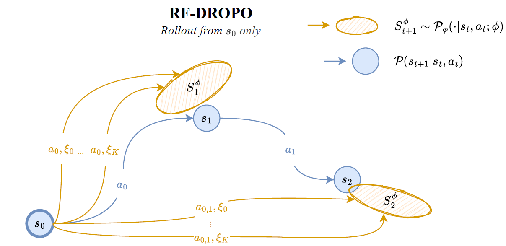

Abstract
Soft robots offer many advantages over their rigid counterparts, including safer interaction, better adaptability to the environment, and greater resilience to deformation. However, a major challenge limiting their wide applicability is the difficulty of providing accurate modeling of their infinite-DoFs dynamics. This is a problem not only for purely model-based control, which suffers from the lack of explicit closed-form representations, but also for learning-based approaches, which need to learn from experience using accurate simulators. This challenge makes Reinforcement Learning (RL) particularly ineffective when used to train policies for soft robot control, because of the large domain gap between what can be simulated during training and the real world. This paper proposes RF-DROPO, the first Adaptive Domain Randomization technique specifically designed to tame the complexity of Sim-to-Real transfer in soft robotics. RF-DROPO employs an extremely small amount of data collected in the real world (as few as a single trajectory) to optimize a posterior distribution over the robot’s dynamics parameters, which is then used as Domain Randomization distribution for RL policy training in simulation. We demonstrate its effectiveness through extensive evaluations in simulation and real world, including zero-shot transfer of policies to a physical soft robot. Results show that RF-DROPO is accurate, data-efficient, and robust to real-world deployment with very high reliability, opening interesting perspectives for future research on RL for closed-loop soft robot control. With this paper, we also fully release our code, as well as the first soft robotics simulator coding interface supporting Domain Randomization.
Keywords: Soft Robotics, Reinforcement Learning, Transfer Learning, Sim-to-Real Transfer, Domain Randomization.
Method Overview
Reset-Free DROPO is specifically designed to address highly-non linear and partially-observable environments, which is typical for deformable robots with infinite DoFs. It performs open-loop rollouts from the initial state s0 of a trajectory collected in the real world. The likelihood of reaching each observed real-world state st+1 (blue circles) is estimated from a distribution of simulated transitions (yellow ovals) generated under sampled dynamics parameters ξK. Maximizing the likelihood of real-world data to occur in simulation, RF-DROPO computes an optimal distribution of dynamics parameters (e.g., friction, masses, etc.) used for training an RL policy with randomized parameters sampled from the same distribution.
Key Contributions
- ✅ Real-world validation: RF-DROPO enables zero-shot sim→real transfer on a physical soft robot; we fully release our code through an open-source, modular Domain Randomization framework.
- 📊 ADR under partial observability: state-of-the-art dynamics parameters inference and robust policy learning; extended robustness analysis across multiple misspecified elastic parameters.
- 💡 Few-shot data efficiency: effective even with a single real trajectory for reliable dynamics parameters distribution estimation and robust policy training.
Supplementary Video


FAQ
Will you release the code/models?
Yes, upon camera‑ready.